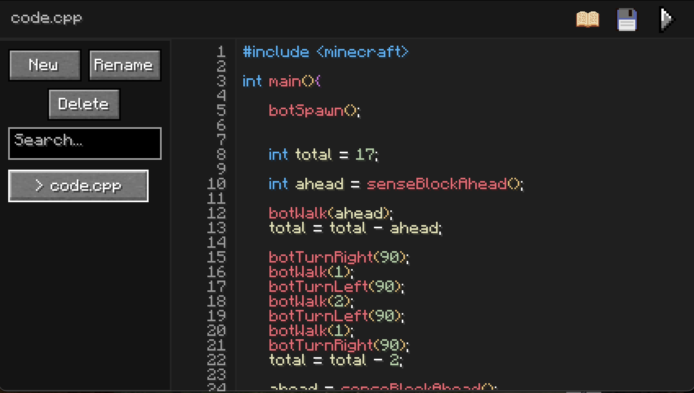

Structure
The projcet has four main parts:
This project is a programming environment built inside Minecraft, for a simplified version of C++ (which i call MiniC++). Students write MiniC++ code in an in-game IDE, run it, and undertake lessons to learn concepts.
The goal was to make introductory programming concepts more fun and interactive. The software-development job market has also gotten rough: Indeed's software-development job-posting index, shown on FRED, has been at an all time low recently. At the same time, some schools are already seeing computer science enrollment dips: Miami University's CS enrollment fell from 545 in Fall 2024 to 389 in Fall 2025 (-28.6%), UAB's Computer Science enrollment fell from 503 in Fall 2024 to 421 in Fall 2025 (-16.3%), and William & Mary's CS enrollment fell from 292 in 2024 to 269 in 2025 (-7.9%). A broader Virginia public-four-year dataset also shows Computer Science enrollment dropping from 1,793 in 2024-25 to 1,673 in 2025-26 (-6.7%). It does not help that AI is getting better at programming too; Anthropic lists Claude Fable 5 at 80.3% on SWE-Bench Pro.
This project was an attempt to make learning programming and computer science feel more appealing and fun (which it is!) to new students. Video games are fun, and Minecraft is a game that most people can understand quickly, so it felt like a natural place to build an interactive programming environment.
The projcet has four main parts:

Students can move around the classroom, jump into lessons, open the IDE, and run code as they like. The lesson programs control a bot using MiniC++ commands and use beginner programming ideas like conditionals, loops, functions, arrays etc. They start with simple sequential programming and build toward more complex tasks.